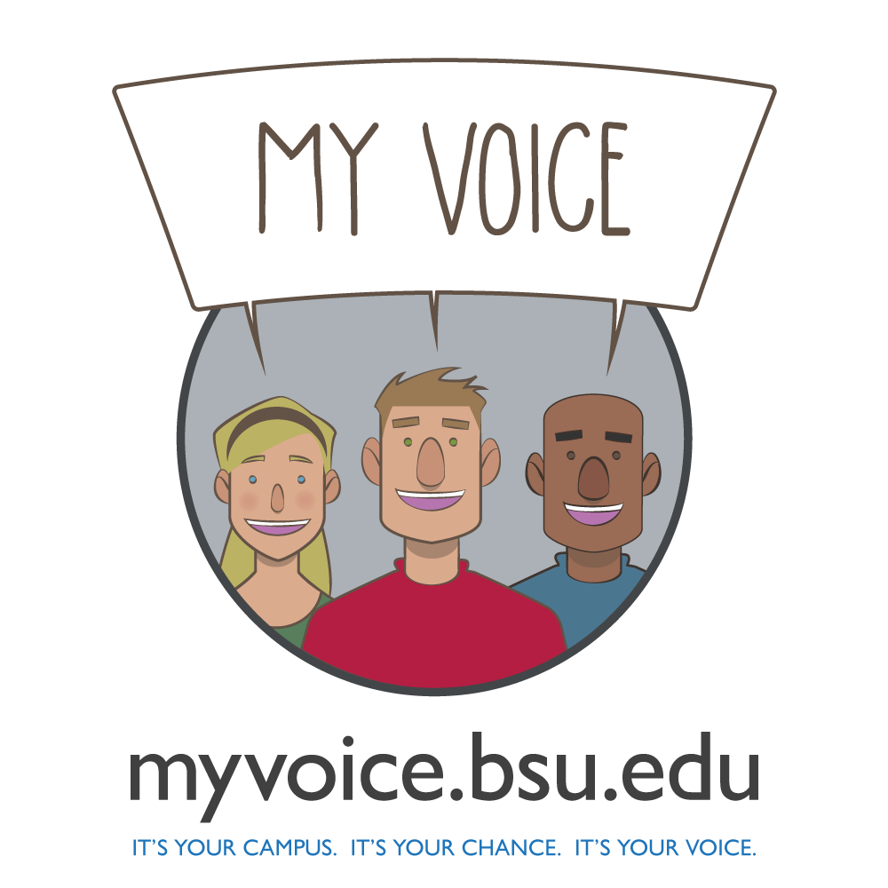

MY VOICE
Art direction/UI
This was a project with a very tight time schedule that required three separate, concurrent teams.In addition to Art/UI direction, I created the logo, the final high fidelity mock ups and all marketing elements for this project. I also worked with multiple teams of designers, developers and marketing to ensure that our style and branding/messaging worked across all platforms and media. The project itself was a new internal center within the University, created to engage students in change. This meant we needed to make sure our message got across amidst a large campus full of strict and similar branding standards. To that end, I purposefully broke away from busy, overly designed imagery. The use of large amounts of white space and the cartoony images stood in stark contrast to all the other local imagery, and the student character mascots helped reinforce the student centric nature of the project.
